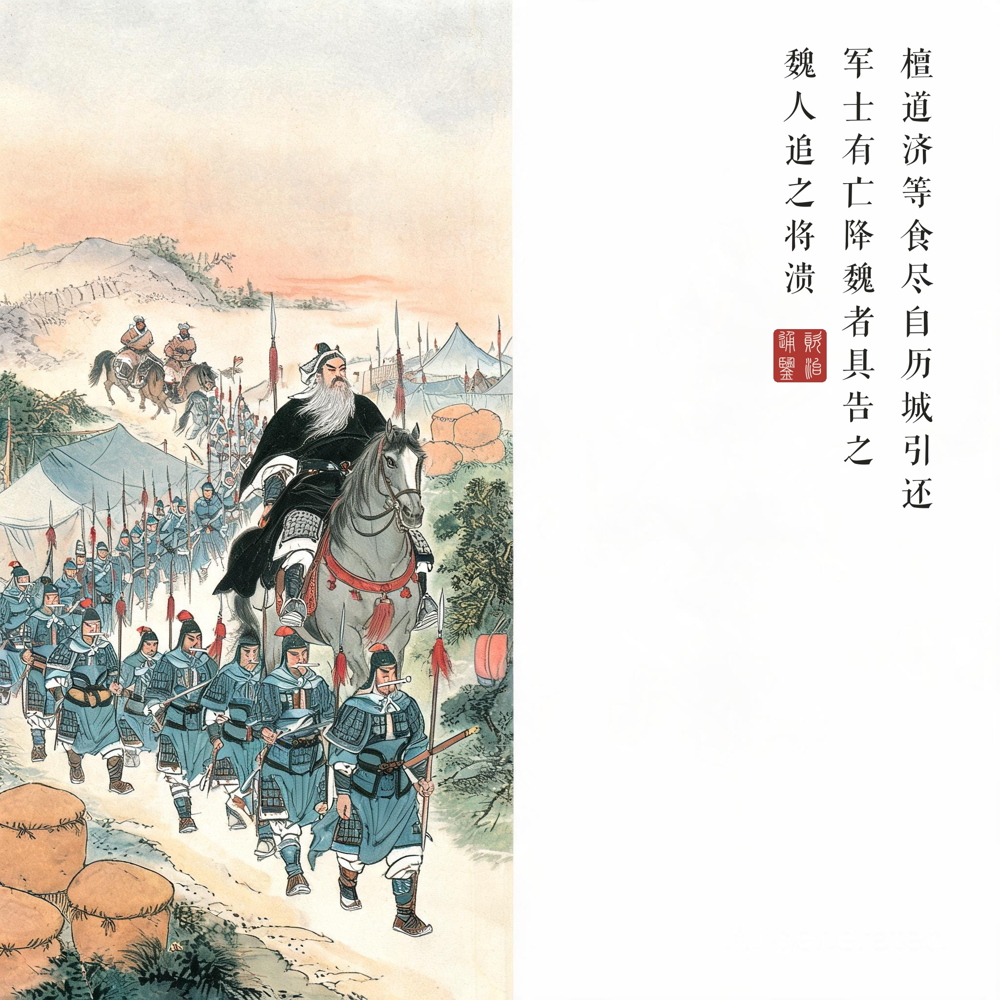
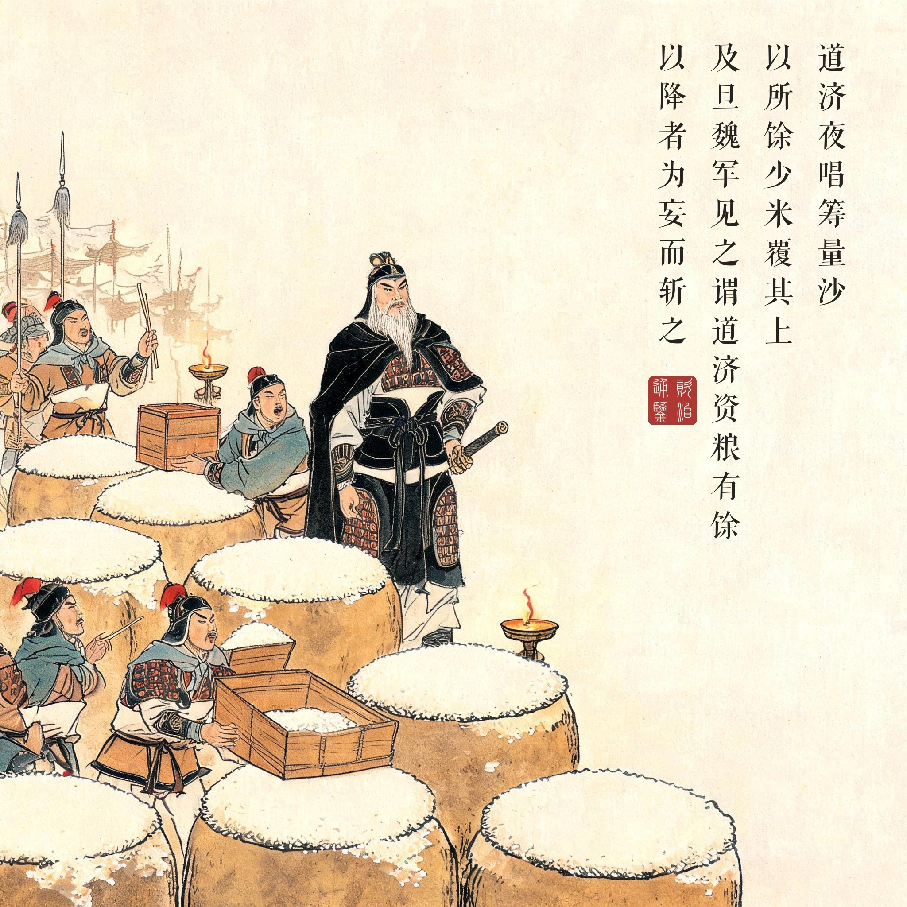
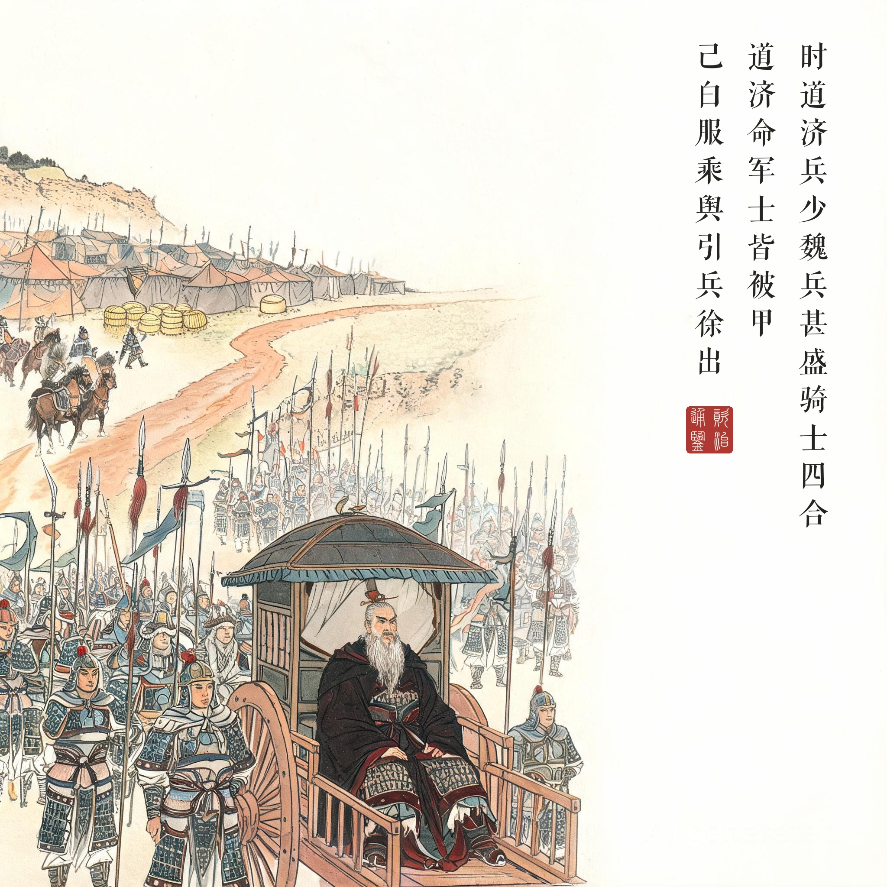
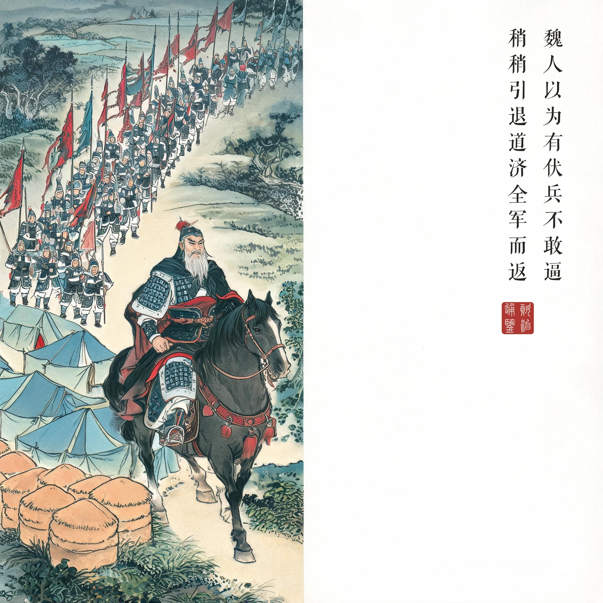

《资治通鉴 · 卷第一百二十二 · 宋纪四》太祖文皇帝中之上元嘉八年（公元 431 年）
（据 daizhigev20《资治通鉴》底本节录）
檀道济等食尽，自历城引还；军士有亡降魏者，具告之。魏人追之，众恟惧，将溃。道济夜唱筹量沙，以所馀少米覆其上。及旦，魏军见之，谓道济资粮有馀，以降者为妄而斩之。时道济兵少，魏兵甚盛，骑士四合。道济命军士皆被甲，己白服乘舆，引兵徐出。魏人以为有伏兵，不敢逼，稍稍引退，道济全军而返。
檀道济等人的粮食吃尽，从历城领兵撤回；军中有逃亡投降魏军的士兵，把实情全部告诉了魏人。魏人追击宋军，部众恐惧骚动，将要溃散。檀道济夜里唱着筹、量着沙，把所剩不多的米覆盖在沙上。到天亮，魏军看见了，以为檀道济资粮充足，认为投降者是撒谎，把逃兵杀了。当时檀道济兵少，魏兵势盛，骑兵从四面合围。檀道济命令军士都披上铠甲，自己穿着白衣坐在车驾上，领兵缓缓而出。魏人以为有伏兵，不敢逼近，渐渐退走，檀道济全军而回。
一场只用道具打赢的战役。唱筹量沙的战争学名字叫“信息欺骗”：己方最致命的弱点（粮尽）已经泄露，怎么办？檀道济没有换情报（不可能），而是换掉情报的可信度——让魏军亲眼看粮食、亲手杀掉提供真情报的人。逃兵被杀那一刻，这场心理战完成了闭环：从此魏军再收到“宋军粮尽”的报告，都只会想起沙堆上那层白米。为将者用兵，上兵伐谋——这一回是“伐信”。
两场表演，一个逻辑。本回四幕其实只讲一件事：在硬实力不足时，把对手的判断成本抬到他不肯付。夜量沙是给远处的斥候看的，白服乘舆是给近处的骑兵看的——两场表演的观众不同，剧本的核心相同：示弱者死，示闲者生。注意第三幕的画面：军士被甲执兵是绷紧的，主帅白服坐车是松弛的——一张一弛之间，追兵只看见了松弛。
名将与朝廷的宿命。檀道济此役保全了北伐失败的残局，让宋军免于全军覆没。而十几年后，正是这位“功高盖主”的名将被宋文帝下令捕杀，死前留下“乃坏汝万里长城”的悲愤。唱筹量沙骗得过追兵，骗不过猜忌的君王——《通鉴》把这两件事分开记在不同的卷里，但读者会自己把它们连起来读。